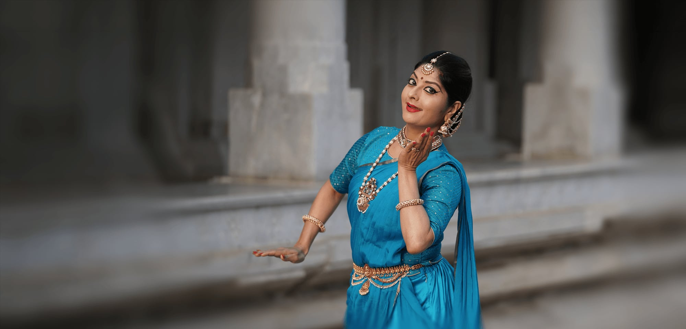

Nritta
Pure dance — rhythmic footwork and body geometry enriched by 108 new adavus

108 movements · New vocabulary · Access on subscription
Abhinava's Research Department has introduced Deshi Marga Adavu (DMA) — a new vocabulary of 108 artistically crafted movements created by Smt. Nirupama Rajendra.
DMA beautifully bridges the Deshi Adavus of Bharatanatyam with the Margi Karanas from the Natyashastra (as reconstructed by Dr. Padma Subrahmanyam). These movements enrich pure Nritta, Abhinaya, and story-telling, offering infinite creative possibilities.
Deshi Marga Adavus are a new set of artistically designed movement vocabularies developed by Smt. Nirupama Rajendra — named in Sanskrit by Shatavadhani Dr. R. Ganesh based on their aesthetic and functional essence. Dr. Ganesh also guided the development process.
Pure dance — rhythmic footwork and body geometry enriched by 108 new adavus
Expression and storytelling — deeper interpretive vocabulary for classical narrative
The movement films are offered on subscription.

The movements draw on Nirupama Rajendra's training in music, dance, literature, and culture — from 5000-year-old scriptures to 21st-century innovations, within the lineage of Dr. Padma Subrahmanyam's Karana reconstruction.
Music direction: Praveen D Rao
Tuning: Varijashree, Ranjani Vasuki & Raghuram
Sanskrit nomenclature: Shatavadhani Dr. R. Ganesh
Reference articles: The Hindu · Narthaki · Narthaki preview
Promotional films and the blessing of Guru Dr. Padma Subrahmanyam — documenting the birth of a new movement vocabulary.


For details on DMA workshops, learning kits, and institutional licensing, please contact:
Email: Learning@abhinavadancecompany.com
DMA is also part of Abhinava Dance School training programs alongside Bharatanatyam, Kathak, and Natyashastra Karanas. View school programmes →
Testimonials
What artists, students and audiences say about Abhinava — from the stage, on tour and in the classroom.